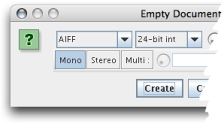
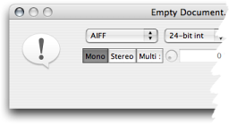
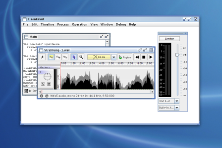
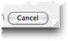
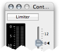
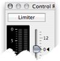

Eisenkraut is written in Java(tm) which is completely platform independant. This raises the need for a graphical user interface (GUI) to be independant of the platform's native look-and-feel. For the user this may appear to be an inconvenience, however Java allows you to switch to different look-and-feels. On MacOS, for example, a very smooth integration into the native Aqua interface is achieved through the 'Mac OS X' look-and-feel. Similarily, on Windows and Linux recent versions of Sun's VM include look-and-feels for Windows XP or Gnome.
You can easily install other look-and-feels. For example,
a very nice looking free one is 'Metouia', a sourceforge project located at
mlf.sourceforge.net. The .jar file
needs to be installed somewhere in the classpath, e.g. on Mac OS put it into
"/System/Library/Java/Extensions", and two lines need to be added to the file
"swing.properties" which resides in "$JAVAHOME/lib" (on Mac OS X, $JAVAHOME corresponds to the alias /System/Library/Frameworks/JavaVM.framework/Home):
swing.installedlaf.metouia.name=Metouia swing.installedlaf.metouia.class=net.sourceforge.mlf.metouia.MetouiaLookAndFeel
Which look-and-feel classes are used can be specified in the Look-and-Feel choice box. All the look-and-feels listed in the "swing.properties" file appear here.
Here is how the New-Empty-Document dialog looks with Metal and Aqua look-and-feel respectively:
Because switching the look-and-feel would require a lot of internal updates to the application, changes become only effective after quitting and restarting Eisenkraut.
All main, document and supportive windows and palettes can be configured to be either independant frames or internal frames inside one encompassing application frame. On Mac OS X users will likely not use internal frames as the native look-and-feel uses independant windows. On Windows (and probably Linux), people are accustomed to have each application present itself as a big screen filling frame with all its child windows internal to that frame. So the default settings on Windows and Linux is to use internal frames. Here's how internal frames look:

Depending on your look-and-feel and operating system, window resizing (grow) boxes may intrude into the frames. This is for example true on Mac OS. In this case, you should check this preferences which will arrange widgets and frame contents so they are not obscured by the grow box. This is usually not necessary on Windows computers.
Here you see that the grow box is not intruding the window with the Metal look-and-feel, but the grow box of the Aqua look-and-feel is intruding (and accordingly when checking the preferences option, the Cancel button in this screenshot is moved a bit to the left):

When checked, some palette windows appear in Mac OS X floating palette style (tiny window bar, tiny window gadgets). These palettes (e.g. the Observer or the Control Room palette) are then floating above all other windows and are hidden when the application looses focus.
Note that Java 1.5 is required for palettes to be floating above other windows. Java 1.5 is not available for Mac OS X 10.3.9 Panther. Also note that there are still some keyboard focus issues with floating palettes that make it sometimes necessary to unfocus and re-focus a document window to obtain keyboard control (such as pressing Space to start transport).
Here is how the control room palette looks in normal mode (left) and floating palette mode (right):
